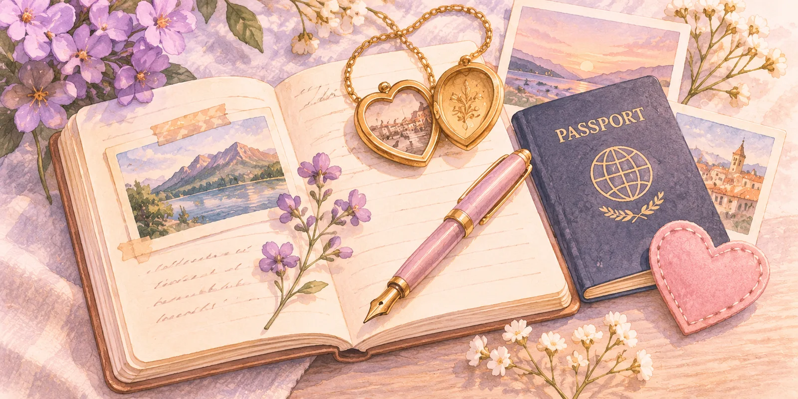

CREATIVE IDEAS
20 journaling ideas beyond “Dear diary”.
Explore 20 creative ways to keep a journal — from everyday moments and treasured memories to adventures and personal growth. Each idea comes with a simple example to help you begin.
No perfect handwriting, long entries or daily streaks required. Pick one idea and make it your own.


Pick an idea for today
Choose any idea below, or let us pick one for you.
Everyday journaling
Small observations make a lovely record of ordinary life.
- Idea 01
Collect the tiny wins
Write down something you managed today, however ordinary. Give yourself credit for the small steps.
Example: “I finally made the phone call I'd been putting off. It felt good to get it done.”
- Idea 02
Try one sentence a day
Write just one line each evening for a week. Read all seven together on Sunday.
Example: “Tuesday: We ate dinner outside for the first time this year.”
- Idea 03
Notice one good thing
Choose one ordinary detail that made your day a little brighter.
Example: “The bakery gave me the warm loaf straight from the oven.”
- Idea 04
Make a five-minute gratitude list
Write three things you appreciated today and one reason each mattered.
Example: “A message from Leah, a dry walk home, and dinner with no rush.”
- Idea 05
Make a sound-of-home list
List the familiar sounds that make a place, season or person feel unmistakable.
Example: “Rain at the window, the kettle clicking, and Dad humming in the kitchen.”
Memories & milestones
Keep the people, traditions and little details you want to remember.
- Idea 06
Tell the story behind one photo
Choose a picture from your camera roll and write what the photograph doesn't show.
Example: “The blurry café photo was taken just after we found out our trip was happening.”
- Idea 07
Remember a conversation
Save a kind, funny or surprising exchange before its little details fade.
Example: “Mum said the garden looks better when we leave the wildflowers alone.”
- Idea 08
Keep a family ritual
Record the food, phrases or little traditions that make gatherings feel like home.
Example: “Sunday lunch always starts late, and everyone steals potatoes before we sit down.”
- Idea 09
Tell the story of a treasured object
Choose a ticket, mug, photograph or keepsake. Explain why it matters to you.
Example: “The chipped blue bowl came from my first flat. It still makes me smile.”
- Idea 10
Revisit a childhood favourite
Remember a toy, game, meal or place you loved when you were small.
Example: “Gran kept orange ice pops in the freezer just for us.”
Adventures & experiences
Record discoveries, changes of scenery and the stories that followed you home.
- Idea 11
Visit a familiar place in a new season
Describe somewhere you know well and what has changed since you last noticed it.
Example: “The park bench is the same, but everything around it is gold this week.”
- Idea 12
See a day through someone else's eyes
Imagine how a pet, child or friend might describe a shared moment. Keep it playful.
Example: “According to the dog, today's walk was mostly about the interesting tree.”
- Idea 13
Make a travel postcard entry
Write a short postcard from a journey, including one surprising detail.
Example: “Dear future me: the tiny café in Lisbon was worth getting lost for.”
- Idea 14
Keep a first-time diary
Collect the experiences you tried for the first time this month.
Example: “First pottery class: a lopsided bowl and a very good afternoon.”
- Idea 15
Record someone’s favourite saying
Preserve a phrase or expression that reminds you of someone you love.
Example: “Mum still says ‘bring a coat’ even when the sun is shining.”
Reflection & growth
Notice how you are changing and celebrate what you have learned.
- Idea 16
Capture a before-and-after moment
Compare where something started with where it is now. Celebrate the progress, not just the outcome.
Example: “This time last year the balcony was empty. Now it's full of flowers.”
- Idea 17
Write a letter to future you
Tell your future self what life feels like right now and what you hope they'll remember.
Example: “I hope when you read this, you still remember…”
- Idea 18
Keep a lesson worth remembering
Write about something experience taught you and how it might help you next time.
Example: “I learned that asking for help usually makes a difficult day lighter.”
- Idea 19
Celebrate the courage it took
Write about something you tried even though you felt unsure of yourself.
Example: “I went to the class alone and came away with two new friends.”
- Idea 20
Write a small note of hope
Name something you are looking forward to, and why it matters to you.
Example: “I can’t wait for the first warm evening when we eat outside.”
Make it your own
Start with an idea, add one detail you don't want to lose, and stop whenever it feels complete. A photo and two honest sentences can be just as meaningful as a whole page. Want questions to help you write? Explore our journal prompts. Want more specifically photographic inspiration? Try 100 photo journal ideas.
Keep the story with the photo.
Stillkeep is a private journal app for iPhone. Add a photo, write a few words, and save the moments you want to revisit.
Get Stillkeep free on iPhone ↗ On a computer? Scan with your iPhone.
On a computer? Scan with your iPhone.